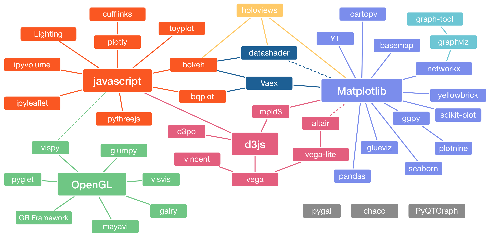
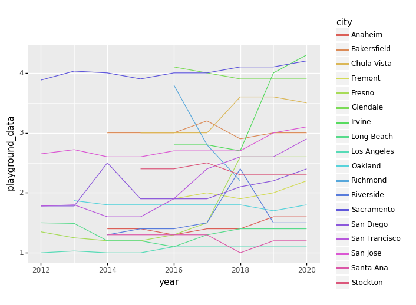
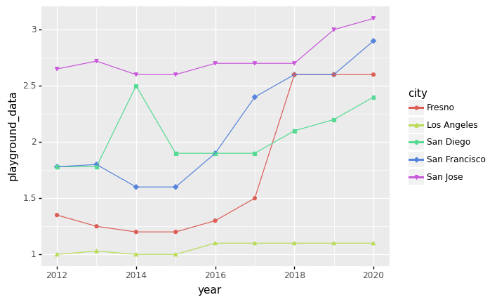
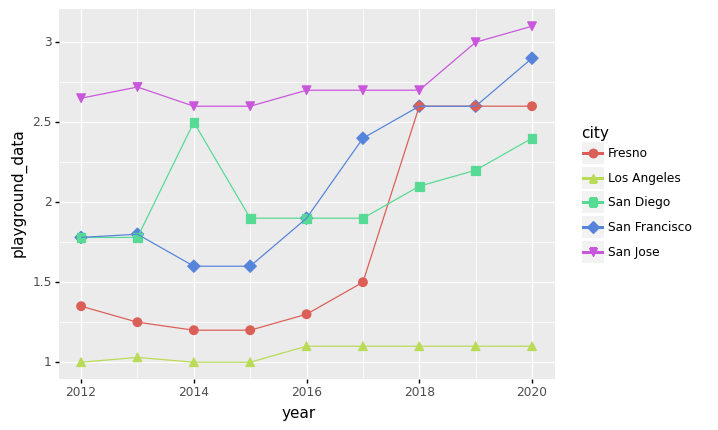
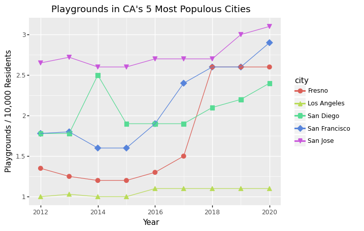
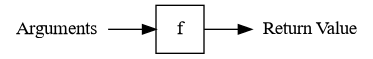

3. Summarizing Data¶
Learning Objectives
Write functions to organize and encapsulate reusable code
Map a function over data frame columns
Map a function over grouped data frame rows
Describe the popular data visualization packages for Python
Use the grammar of graphics to create a visualization
Save a visualization to a file
3.1. Recap¶
You’ll need the parks data from previous sections again for this section:
import numpy as np
import pandas as pd
parks = pd.read_csv("data/parks_final.csv")
3.1.1. Data Structures & Types¶
Python provides several built-in data types such as int, float, bool,
str, and list. You can check the type of an object with the type
function.
Pandas provides a Series data structure, which is similar to a list, but has
more features. For the elements of a Series, Pandas uses data types which are
more specific than Python’s data types. These usually have the same names as
Python’s data types but also specify the number of bits for the data (for
example, int64). Pandas uses the obj data type for a Series which contains
strings or a mix of several different types of elements. You can check the data
type of a Series with the .dtype attribute.
Pandas also provides a DataFrame data strucure, which represents tabular
data. Each column in a DataFrame is a Series. You can check the data types of
the columns in a DataFrame with the .dtypes attribute.
3.1.2. Exploring Series & DataFrames¶
Pandas Series and DataFrames have several descriptive attributes:
.indexis the names of the elements or rows.shapeis the dimensions
They also have several summary methods:
.headselects the first 5 elements or rows.describecomputes common summary statistics.value_countscomputes the frequency of each unique value
For a DataFrame, these three summary methods are computed per-column.
DataFrames also have a .columns attribute for the names of the columns and a
.info method which prints a summary of the structure.
3.1.3. Indexing¶
Python’s built-in indexing operator is the square brackets [ ]. Indexing
an object retrieves elements from the object, but the details differ depending
on the object’s type.
For a list, the indexing operator selects elements by position. As the
index, you can use a single integer, a list of integers, or a slice. A
slice, written a:b, selects all elements from a up to but not including
b. Negative indices count backwards from the right edge of the list (so
x[-1] gets the last element of a list).
Pandas provides three different ways to index Series and DataFrames:
.iloc[ ]selects elements by position.loc[ ]selects elements by name or by condition (a Boolean array)[ ]selects elements by position, name, or condition
DataFrames are two-dimensional, so generally you need to provide two different
arguments when you index them. A : argument, like the second argument in
parks.iloc[1, :], selects all elements along that axis (so this code selects
the first row and all columns).
3.1.4. Special Values¶
Python represents the absence of a value with None.
NumPy represents the result of an undefined numerical computation such as
np.log(-1) with np.nan. “nan” stands for not a number.
Pandas uses both None and np.nan to represent missing values, values
which were left out of a data set due to how the data was collected. Recent
versions of Pandas also use pd.NA for this purpose.
For a Series or DataFrame, you can use the .isna method to detect all three
kinds of missing values.
3.2. Aggregating Data¶
The Pandas .aggregate method aggregates the elements of a Series,
reducing the Series to a smaller number of values (usually 1 value). For
example, to compute the mean of the restroom_data column in the parks data:
parks["restroom_data"].aggregate("mean")
2.129276315789474
The .agg method is an alias for .aggregate:
parks["restroom_data"].agg("mean")
2.129276315789474
You can pass .aggregate functions instead of names of functions. For
instance:
parks["restroom_data"].agg(np.mean)
2.129276315789474
You can also pass .aggregate a list of names or functions:
parks["restroom_data"].agg([np.mean, "median"])
mean 2.129276
median 1.900000
Name: restroom_data, dtype: float64
Pandas provides alias methods such as .sum, .mean, .median, and .std
for the most common aggregation functions. For example, to compute the mean:
parks["restroom_data"].mean()
2.129276315789474
The aggregation methods also work with DataFrames, where they are applied separately to each column. Here’s an example of computing medians for a few columns in the parks data:
parks[["restroom_data", "basketball_data"]].median()
restroom_data 1.9
basketball_data 2.7
dtype: float64
3.2.1. Aggregating within Groups¶
Aggregation is especially useful when combined with grouping. The .groupby
method groups the rows of a DataFrame using the columns you specify. The
grouping columns should generally be categories rather than decimal numbers.
For example, to group the parks data by city and then compute the mean number
of restrooms per 10,000 people in each city:
parks.groupby("city")["restroom_data"].mean()
city
Albuquerque 1.433333
Anaheim 2.833333
Anchorage 2.900000
Arlington 2.300000
Atlanta 0.466667
...
Tulsa 1.733333
Virginia Beach 2.200000
Washington 2.533333
Wichita 3.300000
Winston-Salem 2.233333
Name: restroom_data, Length: 100, dtype: float64
Similarly, to group the parks data by state and year and compute the median number of basketball hoops per group:
parks.groupby(["state", "year"])["basketball_data"].median()
state year
Alaska 2015 2.70
2016 2.70
2017 2.60
2018 2.60
2019 1.70
...
Wisconsin 2016 8.25
2017 7.95
2018 8.15
2019 8.15
2020 8.10
Name: basketball_data, Length: 289, dtype: float64
By default, the grouping columns are moved into the index of the result. You
can prevent this by setting as_index = False in .groupby:
parks.groupby(["state", "year"], as_index = False)["basketball_data"].median()
| state | year | basketball_data | |
|---|---|---|---|
| 0 | Alaska | 2015 | 2.70 |
| 1 | Alaska | 2016 | 2.70 |
| 2 | Alaska | 2017 | 2.60 |
| 3 | Alaska | 2018 | 2.60 |
| 4 | Alaska | 2019 | 1.70 |
| ... | ... | ... | ... |
| 284 | Wisconsin | 2016 | 8.25 |
| 285 | Wisconsin | 2017 | 7.95 |
| 286 | Wisconsin | 2018 | 8.15 |
| 287 | Wisconsin | 2019 | 8.15 |
| 288 | Wisconsin | 2020 | 8.10 |
289 rows × 3 columns
Tip
You can also “reset” the index on a DataFrame, so that the current indexes
become columns with the .reset_index method.
Leaving the grouping columns in the index is often convenient because then you can easily access results for the groups you’re interested in:
state_medians = parks.groupby(["state", "year"])["basketball_data"].median()
# All states, year 2017
state_medians.loc[:, 2017]
state
Alaska 2.60
Arizona 2.10
California 2.60
Colorado 1.70
District of Columbia 4.00
Florida 3.75
Georgia 2.35
Hawaii 5.70
Idaho 2.20
Illinois 3.10
Indiana 2.00
Kansas 1.35
Kentucky 3.10
Louisiana 3.35
Maryland 1.60
Massachusetts 3.40
Michigan 3.20
Minnesota 7.30
Missouri 2.15
Nebraska 4.45
Nevada 2.90
New Jersey 2.05
New Mexico 2.30
New York 4.95
North Carolina 2.00
Ohio 3.45
Oklahoma 2.20
Oregon 3.80
Pennsylvania 3.85
Tennessee 3.00
Texas 2.20
Virginia 4.10
Washington 1.90
Wisconsin 7.95
Name: basketball_data, dtype: float64
A few aggregation functions only make sense when used together with groups. One
is the .first method, which returns the first element or row. The .first
method is especially useful if all the values in a group are the same and you
want to reduce the data to one row per group. For instance, in the parks data
set, the pop2020 only has one value per city across all the years. So you can
get the 2020 population for each city with this code:
parks.groupby(["state", "city"])["pop2020"].first()
state city
Alaska Anchorage 291247.0
Arizona Chandler 275987.0
Glendale 248325.0
Mesa 504258.0
Phoenix 1608139.0
...
Virginia Richmond 226610.0
Virginia Beach 459470.0
Washington Seattle 737015.0
Wisconsin Madison 269840.0
Milwaukee 577222.0
Name: pop2020, Length: 106, dtype: float64
3.3. Visualization in Python¶

Image from Jake VanderPlas. See here for a version with links to all of the packages!
So many visualization packages are available for Python that there is even a website dedicated to helping people decide which to use. This reader focuses on static visualization, where the visualization is a still image. Some popular packages for creating static visualizations are:
matplotlib is the foundation for most other visualization packages. matplotlib is low-level, meaning it’s flexible but even simple plots may take 5 lines of code or more. It’s good to know a little bit about matplotlib, but it probably shouldn’t be your primary visualization package. Familiarity with MATLAB makes it easier to learn matplotlib.
pandas provides built-in plotting functions, which can be convenient but are more limited than what you’ll find in dedicated visualization packages. They’re also inconsistent about the expected format of the data.
plotnine is a copy of the popular R package ggplot2. The package uses the grammar of graphics, a convenient way to describe visualizations in terms of layers. Familiarity with R’s ggplot2 or Julia’s Gadfly.jl package makes it easier to learn plotnine (and vice-versa).
seaborn is designed specifically for making statistical plots. It’s well-documented and stable.
There are also many packages available for making interactive visualizations.
This reader focuses on plotnine, so that the visualization skills you learn here will also be relevant if you end up using R or Julia. plotnine has detailed documentation. It’s also useful to look at the ggplot2 documentation and cheatsheet.
3.3.1. Configuring Jupyter¶
Jupyter notebooks can display most static visualizations and some interactive visualizations. If you’re going to use visualization packages that depend on matplotlib (such as plotnine), it’s a good idea to set up your notebook by running:
# Initialize matplotlib
%matplotlib inline
import matplotlib.pyplot as plt
# We'll see what this code does later on:
plt.rcParams["figure.figsize"] = [10, 8]
The last line sets the default size of plots. You can increase the numbers to make plots larger, or decrease them to make plots smaller.
3.4. Installing Packages¶
Matplotlib is included with Anaconda, but plotnine is not. So you need to install the plotnine package in order to use it.
You can use Anaconda’s conda utility to install packages. The conda utility
is a program, not part of Python. In JupyterLab, open a Terminal (File ->
New -> Terminal). Then enter:
conda install -c conda-forge plotnine
The command conda install PACKAGE installs the package called PACKAGE. The
flag -c conda-forge tells conda to use a version from the conda-forge package
repository. Packages on conda-forge are usually more up to date than the ones
in Anaconda’s default package repository.
You can learn more about Anaconda and conda in the official documentation.
3.5. The Grammar of Graphics¶
plotnine is based on the grammar of graphics. The idea of a grammar of graphics is that visualizations can be built up in layers. In plotnine, the three layers every plot must have are:
Data
Geometry
Aesthetics
There are also several optional layers. Here are a few:
Layer |
Description |
|---|---|
scales |
Title, label, and axis value settings |
facets |
Side-by-side plots |
guides |
Axis and legend position settings |
annotations |
Shapes that are not mapped to data |
coordinates |
Coordinate systems (Cartesian, logarithmic, polar) |
In Section 1.4.2, you learned to import a module in a Python package with
the import keyword. Python also provides a from keyword to import specific
objects within a module. The syntax is from X import Y, so for example you
can write from pandas import DataFrame. When you import an object this way,
you can access the object without the module name as a prefix. For instance,
you can then write DataFrame instead of pd.DataFrame.
You can also use the from keyword to import all objects in a module with the
wildcard syntax from X import *. You generally shouldn’t do this, because
objects in the module will overwrite objects in your code if they have the same
name. However, the plotnine package is designed to be imported this way:
from plotnine import *
To learn how to use the package, let’s make a plot with the parks data.
What kind of plot should we make? It depends on what data we want the plot to show. Let’s make a line plot that shows the number of playgrounds per 10,000 residents over the years for major cities in California.
3.5.1. Preparing the Data¶
Before making a plot, you’ll generally have to prepare the data by getting a subset of the rows and columns in which you’re interested. You can get a subset by using the indexing techniques that were covered in Section 2.5. Here’s one way to get the rows for only the cities in California:
ca_parks = parks.loc[parks["state"] == "California", ]
ca_parks.head()
| year | rank | city | med_park_size_data | med_park_size_points | park_pct_city_data | park_pct_city_points | pct_near_park_data | pct_near_park_points | spend_per_resident_data | ... | splashground_data | splashground_points | amenities_points | total_points | total_pct | park_benches | state | pop2020 | pop2010 | area2020 | |
|---|---|---|---|---|---|---|---|---|---|---|---|---|---|---|---|---|---|---|---|---|---|
| 6 | 2020 | 7 | Irvine | 6.1 | 28.0 | 27% | 50.0 | 82% | 73.0 | $215 | ... | 0.7 | 25.0 | 67.3 | 318.0 | 79.6 | NaN | California | 307670.0 | 212375.0 | 65.6 |
| 7 | 2020 | 8 | San Francisco | 1.3 | 4.0 | 21% | 50.0 | 100% | 100.0 | $399 | ... | 1.0 | 36.0 | 61.7 | 316.0 | 78.9 | NaN | California | 873965.0 | 805235.0 | 46.9 |
| 17 | 2020 | 18 | San Diego | 6.8 | 32.0 | 19% | 50.0 | 81% | 71.0 | $153 | ... | 0.1 | 2.0 | 37.2 | 276.0 | 69.0 | NaN | California | 1386932.0 | 1307402.0 | 325.9 |
| 22 | 2020 | 23 | Long Beach | 3.2 | 14.0 | 10% | 25.0 | 84% | 76.0 | $180 | ... | 0.2 | 4.0 | 50.0 | 265.0 | 66.3 | NaN | California | 466742.0 | 462257.0 | 50.7 |
| 30 | 2020 | 30 | Sacramento | 5.4 | 25.0 | 9% | 21.0 | 83% | 75.0 | $122 | ... | 4.5 | 100.0 | 60.2 | 248.0 | 62.0 | NaN | California | 524943.0 | 466488.0 | 98.6 |
5 rows × 31 columns
3.5.2. Layer 1: Data¶
The data layer determines the data set used to make the plot. plotnine is designed for working with tidy data frames. Tidy means:
Each observation has its own row.
Each feature has its own column.
Each value has its own cell.
To set up the data layer, call the ggplot function on a data frame:
ggplot(parks)
<ggplot: (8792622102673)>
This returns a blank plot. We still need to add a few more layers.
3.5.3. Layer 2: Geometry¶
The geometry layer determines the shape or appearance of the visual elements of the plot. In other words, the geometry layer determines what kind of plot to make: one with points, lines, boxes, or something else.
There are many different geometries available in plotnine. The package provides
a function for each geometry, always prefixed with geom_.
To add a geometry layer to the plot, choose the geom_ function you want and
add it to the plot with the + operator.
ggplot(parks) + geom_line()
---------------------------------------------------------------------------
KeyError Traceback (most recent call last)
~/garden/miniconda3/envs/py-workshop/lib/python3.9/site-packages/IPython/core/formatters.py in __call__(self, obj)
700 type_pprinters=self.type_printers,
701 deferred_pprinters=self.deferred_printers)
--> 702 printer.pretty(obj)
703 printer.flush()
704 return stream.getvalue()
~/garden/miniconda3/envs/py-workshop/lib/python3.9/site-packages/IPython/lib/pretty.py in pretty(self, obj)
392 if cls is not object \
393 and callable(cls.__dict__.get('__repr__')):
--> 394 return _repr_pprint(obj, self, cycle)
395
396 return _default_pprint(obj, self, cycle)
~/garden/miniconda3/envs/py-workshop/lib/python3.9/site-packages/IPython/lib/pretty.py in _repr_pprint(obj, p, cycle)
698 """A pprint that just redirects to the normal repr function."""
699 # Find newlines and replace them with p.break_()
--> 700 output = repr(obj)
701 lines = output.splitlines()
702 with p.group():
~/garden/miniconda3/envs/py-workshop/lib/python3.9/site-packages/plotnine/ggplot.py in __repr__(self)
95 Print/show the plot
96 """
---> 97 self.__str__()
98 return '<ggplot: (%d)>' % self.__hash__()
99
~/garden/miniconda3/envs/py-workshop/lib/python3.9/site-packages/plotnine/ggplot.py in __str__(self)
86 Print/show the plot
87 """
---> 88 self.draw(show=True)
89
90 # Return and empty string so that print(p) is "pretty"
~/garden/miniconda3/envs/py-workshop/lib/python3.9/site-packages/plotnine/ggplot.py in draw(self, return_ggplot, show)
203 self = deepcopy(self)
204 with plot_context(self, show=show):
--> 205 self._build()
206
207 # setup
~/garden/miniconda3/envs/py-workshop/lib/python3.9/site-packages/plotnine/ggplot.py in _build(self)
306 # Prepare data in geoms
307 # e.g. from y and width to ymin and ymax
--> 308 layers.setup_data()
309
310 # Apply position adjustments
~/garden/miniconda3/envs/py-workshop/lib/python3.9/site-packages/plotnine/layer.py in setup_data(self)
57 def setup_data(self):
58 for l in self:
---> 59 l.setup_data()
60
61 def draw(self, layout, coord):
~/garden/miniconda3/envs/py-workshop/lib/python3.9/site-packages/plotnine/layer.py in setup_data(self)
361 return type(data)()
362
--> 363 data = self.geom.setup_data(data)
364
365 check_required_aesthetics(
~/garden/miniconda3/envs/py-workshop/lib/python3.9/site-packages/plotnine/geoms/geom_line.py in setup_data(self, data)
20
21 def setup_data(self, data):
---> 22 return data.sort_values(['PANEL', 'group', 'x'])
~/garden/miniconda3/envs/py-workshop/lib/python3.9/site-packages/pandas/util/_decorators.py in wrapper(*args, **kwargs)
309 stacklevel=stacklevel,
310 )
--> 311 return func(*args, **kwargs)
312
313 return wrapper
~/garden/miniconda3/envs/py-workshop/lib/python3.9/site-packages/pandas/core/frame.py in sort_values(self, by, axis, ascending, inplace, kind, na_position, ignore_index, key)
6235 if len(by) > 1:
6236
-> 6237 keys = [self._get_label_or_level_values(x, axis=axis) for x in by]
6238
6239 # need to rewrap columns in Series to apply key function
~/garden/miniconda3/envs/py-workshop/lib/python3.9/site-packages/pandas/core/frame.py in <listcomp>(.0)
6235 if len(by) > 1:
6236
-> 6237 keys = [self._get_label_or_level_values(x, axis=axis) for x in by]
6238
6239 # need to rewrap columns in Series to apply key function
~/garden/miniconda3/envs/py-workshop/lib/python3.9/site-packages/pandas/core/generic.py in _get_label_or_level_values(self, key, axis)
1777 values = self.axes[axis].get_level_values(key)._values
1778 else:
-> 1779 raise KeyError(key)
1780
1781 # Check for duplicates
KeyError: 'x'
This returns the error message KeyError: 'x', which means the geometry needs
to know which column of data to use for the aesthetic x. We’ll learn more
about aesthetics in the next section.
3.5.4. Layer 3: Aesthetics¶
The aesthetic layer determines the relationship between the data and the geometry. Use the aesthetic layer to map features in the data to aesthetics (visual elements) of the geometry.
The aes function creates an aesthetic layer. The syntax is:
aes(AESTHETIC = FEATURE, ...)
The names of the aesthetics depend on the geometry, but some common ones are
x, y, color, fill, shape, and size. There is more information about
and examples of aesthetic names in the documentation.
For example, we want to put year on the x-axis and playground_data on the
y-axis. We also want to use a separate color for each city. So the aesthetic
layer should be:
aes(x = "year", y = "playground_data", color = "city")
Unlike most layers, the aesthetic layer is not added to the plot with the +
operator. Instead, pass the aesthetic layer as the second argument to the
ggplot function:
(ggplot(ca_parks, aes(x = "year", y = "playground_data", color = "city")) +
geom_line())

<ggplot: (8792613480780)>
Tip
Long lines of code tend to be hard to read, just like long lines of text. You can break a line of code across multiple lines as long as you put the code inside of parentheses, like the code above.
3.5.5. Refining Visualizations¶
Making a good plot is usually a refinement process, where you go through several drafts before getting to one that communicates the information clearly.
For example, the plot above is visually cluttered. As a rule of thumb, line plots shouldn’t have more than 5 to 7 lines. The plot may also be difficult to read for colorblind people, since the lines are only distinguished by color.
Let’s change the plot so that it only shows California’s 5 most populous
cities. You can use the pop2020 column and grouping to determine which cities
those are:
top_cities = ca_parks.groupby("city")["pop2020"].first().sort_values()
top_cities = top_cities.tail(5).reset_index()["city"]
top_cities
0 Fresno
1 San Francisco
2 San Jose
3 San Diego
4 Los Angeles
Name: city, dtype: object
Now change the subset of the data:
ca5_parks = ca_parks.loc[ca_parks["city"].isin(top_cities)]
ca5_parks.head()
| year | rank | city | med_park_size_data | med_park_size_points | park_pct_city_data | park_pct_city_points | pct_near_park_data | pct_near_park_points | spend_per_resident_data | ... | splashground_data | splashground_points | amenities_points | total_points | total_pct | park_benches | state | pop2020 | pop2010 | area2020 | |
|---|---|---|---|---|---|---|---|---|---|---|---|---|---|---|---|---|---|---|---|---|---|
| 7 | 2020 | 8 | San Francisco | 1.3 | 4.0 | 21% | 50.0 | 100% | 100.0 | $399 | ... | 1.0 | 36.0 | 61.7 | 316.0 | 78.9 | NaN | California | 873965.0 | 805235.0 | 46.9 |
| 17 | 2020 | 18 | San Diego | 6.8 | 32.0 | 19% | 50.0 | 81% | 71.0 | $153 | ... | 0.1 | 2.0 | 37.2 | 276.0 | 69.0 | NaN | California | 1386932.0 | 1307402.0 | 325.9 |
| 37 | 2020 | 36 | San Jose | 3.0 | 13.0 | 15% | 40.0 | 82% | 74.0 | $108 | ... | 2.0 | 75.0 | 47.2 | 232.0 | 58.0 | NaN | California | 1013240.0 | 945942.0 | 178.3 |
| 52 | 2020 | 49 | Los Angeles | 4.8 | 22.0 | 13% | 32.0 | 62% | 42.0 | $132 | ... | 0.4 | 12.0 | 30.3 | 199.0 | 49.8 | NaN | California | 3898747.0 | 3792621.0 | 469.5 |
| 95 | 2020 | 92 | Fresno | 2.2 | 9.0 | 4% | 8.0 | 67% | 51.0 | $42 | ... | 0.9 | 33.0 | 42.0 | 127.0 | 31.8 | NaN | California | 542107.0 | 494665.0 | 115.2 |
5 rows × 31 columns
Finally, recreate the plot. Showing only the top 5 cities reduces the number of lines. To make the plot colorblind-friendly, add points with different shapes to each line:
(
ggplot(ca5_parks, aes(x = "year", y = "playground_data", shape = "city",
color = "city")) +
geom_point() + geom_line()
)

<ggplot: (8792613512458)>
If you want to set an aesthetic to a constant value, rather than one that’s data dependent, do so outside of the aesthetic layer. For instance, suppose you want to make the points bigger:
(
ggplot(ca5_parks, aes(x = "year", y = "playground_data", shape = "city",
color = "city")) +
geom_point(size = 3) + geom_line()
)

<ggplot: (8792613296740)>
3.5.6. Layer 4: Scales¶
The scales layer controls the title, axis labels, and axis scales of the plot.
Most of the functions in the scales layer are prefixed with scale_, but not
all of them.
The labs function is especially important, because it’s used to set the title
and axis labels:
(
ggplot(ca5_parks, aes(x = "year", y = "playground_data", shape = "city",
color = "city")) +
geom_point(size = 3) + geom_line() +
labs(x = "Year", y = "Playgrounds / 10,000 Residents",
title = "Playgrounds in CA's 5 Most Populous Cities")
)

<ggplot: (8792612134075)>
3.5.7. Saving Plots¶
If you save a plot into a variable, you can use the .save method or the
ggsave function to save it to a file:
plot = (
ggplot(ca5_parks, aes(x = "year", y = "playground_data", shape = "city",
color = "city")) +
geom_point(size = 3) + geom_line() +
labs(x = "Year", y = "Playgrounds / 10,000 Residents",
title = "Playgrounds in CA's 5 Most Populous Cities")
)
ggsave(plot, "line.pdf")
The file format is selected automatically based on the extension. Common formats are PNG and PDF.
3.6. Conditional Statements¶
Sometimes you’ll need code to do different things depending on a condition. You can use an if-statement to write conditional code.
An if-statement begins with the if keyword, followed by a condition and a
colon :. The condition must be an expression that returns a Boolean value
(False or True). The body of the if-statement is the code that will run
when the condition is True. Code in the body must be indented by 4 spaces.
For example, suppose you want your code to generate a different greeting depending on an input name:
name = "Nick"
# Default greeting
greeting = "Nice to meet you!"
if name == "Nick":
greeting = "Hi Nick, nice to see you again!"
greeting
'Hi Nick, nice to see you again!'
Use the else keyword (and a colon :) if you want to add an alternative when
the condition is false. So the previous code can also be written as:
name = "Nick"
if name == "Nick":
greeting = "Hi Nick, nice to see you again!"
else:
# Default greeting
greeting = "Nice to meet you!"
greeting
'Hi Nick, nice to see you again!'
Use the elif keyword with a condition (and a colon :) if you want to add an
alternative to the first condition that also has its own condition. Only the
first case where a condition is True will run. You can use elif as many
times as you want, and can also use else. For example:
name = "Susan"
if name == "Nick":
greeting = "Hi Nick, nice to see you again!"
elif name == "Peter":
greeting = "Go away Peter, I'm busy!"
else:
greeting = "Nice to meet you!"
greeting
'Nice to meet you!'
You can create compound conditions with the keywords not, and and or. The
not keyword inverts a condition. The and keyword combines two conditions
and returns True only if both are True. The or keyword combines two
conditions and returns True if either or both are True.
For example:
name1 = "Arthur"
name2 = "Nick"
if name1 == "Arthur" and name2 == "Nick":
greeting = "These are the authors."
else:
greeting = "Who are these people?!"
greeting
'These are the authors.'
You can write an if-statement inside of another if-statement. This is called
nesting if-statements. Nesting is useful when you want to check a
condition, do some computations, and then check another condition under the
assumption that the first condition was True.
Tip
If-statements correspond to special cases in your code. Lots of special cases in code makes the code harder to understand and maintain. If you find yourself using lots of if-statements, especially nested if-statements, consider whether there is a more general strategy or way to write the code.
3.7. Functions¶
The main way to interact with Python is by calling functions, which was first explained back in Section 1.2.2. This section explains how to write your own functions.
First, a review of what functions are and some of the vocabulary associated with them:
Parameters are placeholder variables for inputs.
Arguments are the actual values assigned to the parameters in a call.
The return value is the output.
Calling a function means using a function to compute something.
The body is the code inside.
It’s useful to think of functions as factories, meaning arguments go in and a
return value comes out. Here’s a visual representation of the idea for a
function f:

A function definition begins with the def keyword, followed by:
The name of the function
A list of parameters surrounded by parentheses
A colon
:
A function can have any number of parameters. Code in the body of the function
must be indented by 4 spaces. Use the return keyword to return a result. The
return keyword causes the function to return a result immediately, without
running any subsequent code in its body.
For example, let’s create a function that detects negative numbers. It should take a Series of numbers as input, compare them to zero, and then return the logical result from the comparison as output. Here’s the code to do that:
def is_negative(x):
return x < 0
The name of the function, is_negative, describes what the function does and
includes a verb. The parameter x is the input. The return value is the result
of x < 0.
Tip
Choosing descriptive names is a good habit. For functions, that means choosing a name that describes what the function does. It often makes sense to use verbs in function names.
Any time you write a function, the first thing you should do afterwards is test
that it actually works. Try the is_negative function on a few test cases:
x = pd.Series([5, -1, -2, 0, 3])
is_negative(6)
False
is_negative(-1.1)
True
is_negative(x)
0 False
1 True
2 True
3 False
4 False
dtype: bool
Notice that the parameter x inside the function is different from the
variable x you created outside the function. Remember that parameters and
variables inside of a function are separate from variables outside of a
function.
Recall that a default argument is an argument assigned to a parameter if no
argument is assigned in the call to the function. You can use = to assign
default arguments to parameters when you define a function with the def
keyword.
For example, suppose you want to write a function that gets the largest values
in a Series. You can make a parameter for the number of values to get, with a
default argument of 5. Here’s the code and some test cases:
def top_n(x, n = 5):
sorted = y.sort_values()
return sorted.head(n)
y = pd.Series([-6, 7, 10, 3, 1, 15, -2])
top_n(y, 3)
0 -6
6 -2
4 1
dtype: int64
top_n(y)
0 -6
6 -2
4 1
3 3
1 7
dtype: int64
Tip
The return keyword causes a function to return a result immediately, without
running any subsequent code in its body. So before the end of the function, it
only makes sense to use return from inside of an if-statement.
A function returns one object, but sometimes computations have multiple results. In that case, return the results in a tuple, list, or other data structure. A tuple is a container for multiple values, similar to a list, but cannot be modified after it is created (so it is more efficient).
For example, let’s make a function that computes the mean and median for a vector. We’ll return the results in a tuple:
import numpy as np
def compute_mean_med(x):
m1 = np.mean(x)
m2 = np.median(x)
return m1, m2
compute_mean_med(pd.Series([1, 2, 3, 1]))
(1.75, 1.5)
Tip
Before you write a function, it’s useful to go through several steps:
Write down what you want to do, in detail. It can also help to draw a picture of what needs to happen.
Check whether there’s already a built-in function. Search online and in the R documentation.
Write the code to handle a simple case first. For data science problems, use a small dataset at this step.
Functions are the building blocks for solving larger problems. Take a divide-and-conquer approach, breaking large problems into smaller steps. Use a short function for each step. This approach makes it easier to:
Test that each step works correctly.
Modify, reuse, or repurpose a step.
3.8. Practice Exercises¶
3.8.1. Exercise 1¶
Use plotnine and the parks data to make a bar plot that shows the number of basketball hoops per 10,000 people in 2018 for 7 cities of your choosing.
Hint
When you want to make a bar plot and you’ve already computed the values that go
on the y-axis, make sure to set stat = "identity" in the geometry function.
3.8.2. Exercise 2¶
Try writing a function is_leap that detects leap years. The input to your
function should be an integer year (or a Series of years), and the output
should be a Boolean value. A year is a leap year if either of these conditions
is true:
It is divisible by 4 and not 100
It is divisible by 400
That means the years 2004 and 2000 are leap years, but the year 2200 is not.
Hint
The modulo operator % returns the remainder after divding a number, so
for example 4 % 3 returns 1.
Here’s a few test cases for your function:
is_leap(400)
is_leap(1997)